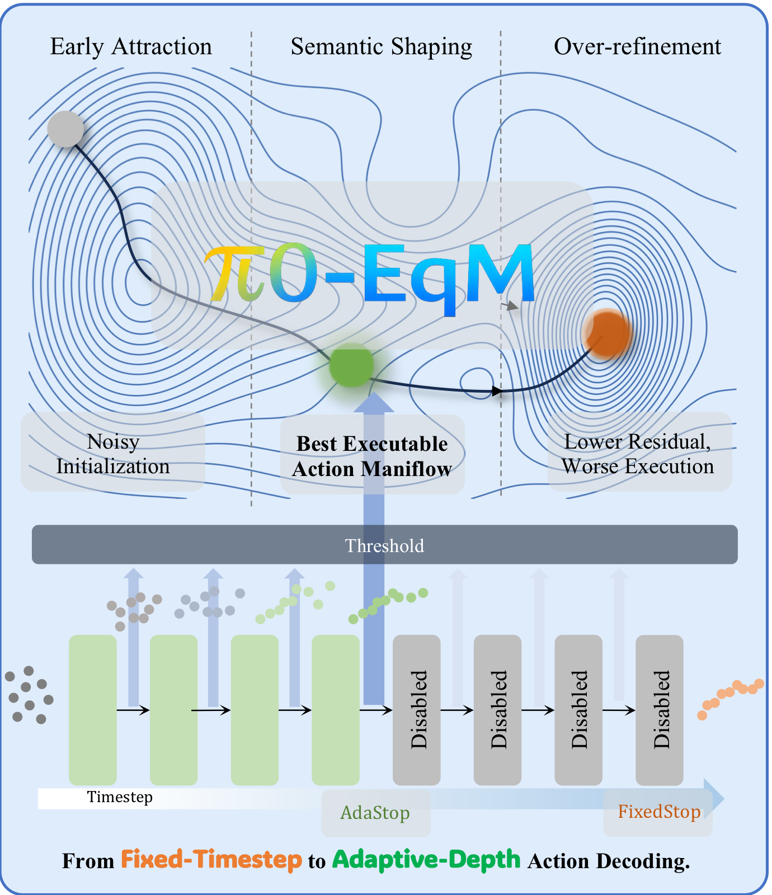
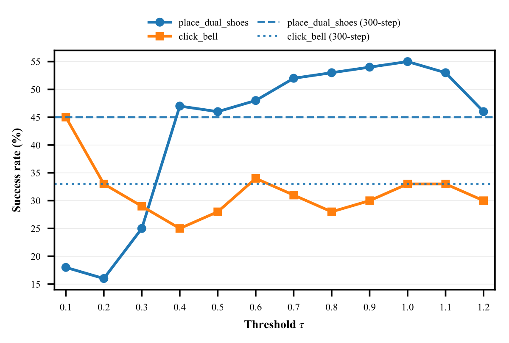
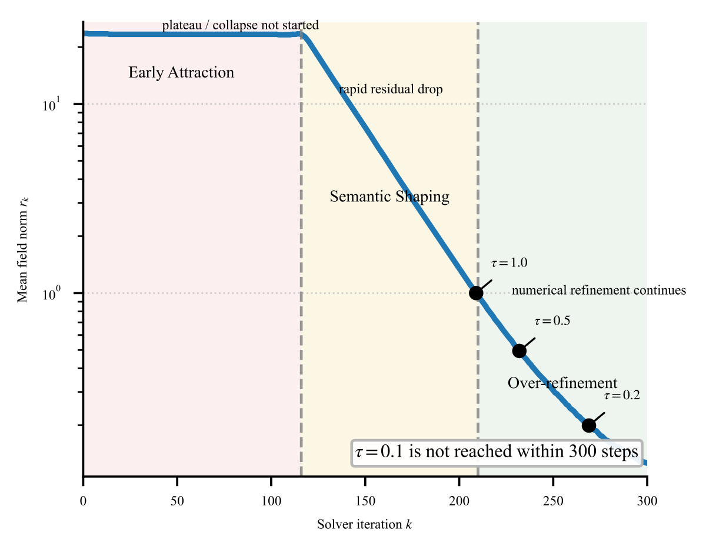
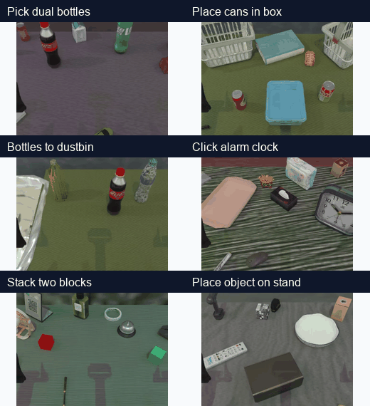

Action Decoding as Iterative Inference
Rather than treating decoding as a fixed-cost black box, we view it as iterative inference whose depth is a controllable policy variable. EqM provides the mathematical scaffolding for this view.

Currently, Vision-Language-Action (VLA) models have become the most adopted paradigm for robotic manipulation for its great potential for task generalization. While most generative flow-matching action decoders for VLA control are often deployed with fixed sampling horizons, limiting state-dependent compute and temporal reuse across control cycles.
We present π0-EqM, which replaces the flow-matching expert in π0 with an Equilibrium Matching (EqM) decoder while leaving the upstream VLA stack unchanged. Under a matched 300-step budget, π0-EqM improves RoboTwin average success from 40.4% to 50.2% across 19 tasks and remains competitive on LIBERO, with its clearest gain on LIBERO-10 (87.0%).
Two threshold scans reveal a task-dependent non-monotonic relation between residual and success, which we term the stationarity-executability gap. The results suggest that inference depth in iterative VLA control is part of policy design and introduce an energy-based VLA perspective that may inform future work on composable action generation across tasks and embodiments.
Rather than treating decoding as a fixed-cost black box, we view it as iterative inference whose depth is a controllable policy variable. EqM provides the mathematical scaffolding for this view.
Unlike diffusion or flow-matching policies that parameterize time-indexed score or velocity fields, EqM learns a time-invariant conditional vector field. The roots of this field correspond to the target equilibrium action chunks.
The normalized lookahead residual exposes state-dependent test-time compute without changing the upstream VLA stack.
Because EqM decoding is independent of a fixed noise schedule, we can exploit temporal coherence between consecutive control cycles.
Under a matched 300-step budget, π0-EqM improves 12 tasks, degrades 5, and ties 2, raising the average success rate from 40.4 to 50.2.
| Task | π0 | π0-EqM | Δ |
|---|
| Suite | π0 | π0-EqM | Δ |
|---|---|---|---|
| LIBERO-Spatial | 96.8 | 97.2 | +0.4 |
| LIBERO-Object | 98.8 | 98.4 | -0.4 |
| LIBERO-Goal | 95.8 | 94.8 | -1.0 |
| LIBERO-10 | 85.2 | 87.0 | +1.8 |
| Average | 94.15 | 94.35 | +0.20 |
Threshold scans reveal task-dependent non-monotonicity. The preferred threshold is task dependent, so the same residual threshold changes both solver cost and closed-loop behavior.


We evaluate on the 19-task RoboTwin benchmark. Representative rollouts from the included videos are shown below.

@misc{liu2026pi0eqm,
title = {$\pi_0$-EqM: Equilibrium Matching for Closed-Loop Vision-Language-Action Control},
author = {Liu, Huanming and Xu, Congsheng and Ji, Jianmin and Mu, Yao},
year = {2026}
}